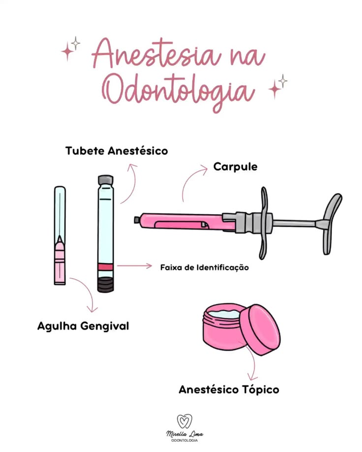

Anestésicos Locais em Odontologia

1. Estrutura dos Anestésicos Locais
Todo anestésico local possui três partes:
- Parte lipofílica (anel aromático)
- Cadeia intermediária
- Parte hidrofílica (amina)
A cadeia intermediária determina se o anestésico é do tipo Éster ou Amida.
2. Amidas x Ésteres
Amidas (uso odontológico atual)
- Metabolismo hepático
- Mais estáveis
- Menor risco de alergia
- Principais: Lidocaína, Mepivacaína, Prilocaína, Articaína, Bupivacaína
Ésteres (quase não usados atualmente)
- Metabolismo plasmático (colinesterases)
- Maior risco de alergia (PABA)
- Exemplos antigos: Procaína, Benzocaína (uso tópico)
3. Sobre as Aminas
A parte amina da molécula permite:
- Solubilidade em meio aquoso
- Ligação aos canais de sódio
- Bloqueio da condução nervosa
O mecanismo de ação ocorre pelo bloqueio dos canais de sódio dependentes de voltagem, impedindo a despolarização e a transmissão do impulso doloroso.
4. Anestésicos Individuais
Lidocaína 2% sem vasoconstritor
- Tipo: Amida
- Início: 2–3 minutos
- Duração pulpar: 5–10 min
- Tecidos moles: 1–2 h
- Metabolismo: Hepático
- Contraindicação: Insuficiência hepática grave
Mepivacaína 3% sem vasoconstritor
- Tipo: Amida
- Início: 1,5–2 min
- Duração pulpar: 20–40 min
- Tecidos moles: 2–3 h
- Diferencial: leve ação vasoconstritora própria
- Contraindicação: Insuficiência hepática grave, recém-nascidos
Prilocaína 3% sem vasoconstritor
- Tipo: Amida
- Início: 2–4 min
- Duração pulpar: 10–15 min
- Tecidos moles: 1,5–2 h
- Risco: Metemoglobinemia
- Contraindicação: Anemia severa, doenças pulmonares graves
Articaína 4%
- Tipo: Amida (com grupo éster adicional)
- Início: 1–2 min
- Duração pulpar: até 60 min (com vaso)
- Diferencial: excelente difusão óssea
- Risco: parestesia em bloqueios mandibulares
Bupivacaína
- Tipo: Amida
- Início: 5–8 min
- Duração pulpar: até 90 min
- Tecidos moles: 4–8 h
- Potência: 4x maior que lidocaína
- Risco: maior cardiotoxicidade
5. Tabela Comparativa
| Anestésico |
Início |
Duração Pulpar |
Duração Tecidos Moles |
Principal Indicação |
| Lidocaína |
2–3 min |
5–10 min |
1–2 h |
Procedimentos rápidos |
| Mepivacaína |
1,5–2 min |
20–40 min |
2–3 h |
Melhor opção sem vaso |
| Prilocaína |
2–4 min |
10–15 min |
1,5–2 h |
Alternativa sem vaso |
| Articaína |
1–2 min |
Até 60 min |
3–5 h |
Infiltrações |
| Bupivacaína |
5–8 min |
Até 90 min |
4–8 h |
Cirurgias longas |
6. Cálculo da Dose Máxima
Dose máxima total (mg) = Peso (kg) × Dose máxima (mg/kg)
Número máximo de tubetes = Dose total ÷ (mg/mL × 1,8)
1% = 10 mg/mL | 2% = 20 mg/mL | 3% = 30 mg/mL | 4% = 40 mg/mL
7. Anestésico Tópico (Superficial)
O que é? Anestesia apenas a superfície da mucosa.
- Usado antes da picada da agulha
- Remoção de sutura
- Pequenos procedimentos superficiais
Tipos: Benzocaína 20% | Lidocaína 5% ou 10%
Início: ~30 segundos
Duração: 5–15 minutos
Cuidados: usar pequena quantidade e evitar grandes áreas.